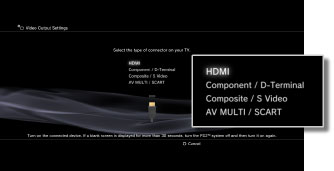
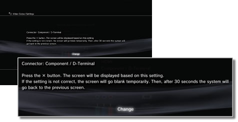
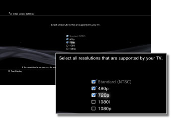
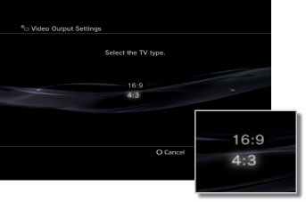
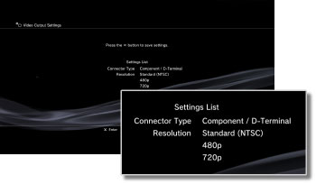

Video Output Settings
Adjust the system's video output settings. Select the best output settings for the TV in use.
1. |
Check the resolution supported by your TV.
Resolution (video mode) varies depending on the TV type. For details, refer to the instructions supplied with the TV.
|
2. |
Select  (Settings) > (Settings) >  (Display Settings). (Display Settings).
|
3. |
Select [Video Output Settings].
|
4. |
Select the connector type on your TV.
Resolution (video mode) varies depending on the type of connector used.

| Input connector on the TV |
Supported video modes (NTSC region) *1 |
Supported video modes (PAL region) *1 |
| HDMI |
1080p / 1080i / 720p / 480p |
1080p / 1080i / 720p / 576p |
| Component / D-Terminal *2 |
1080p / 1080i / 720p / 480p / 480i |
1080p / 1080i / 720p / 576p / 576i |
| Composite / S Video *3 |
480i |
576i |
| AV MULTI / SCART *4 |
480p / 480i |
576p / 576i |
| *1 |
The video mode options vary depending on the region where the PS3™ system was purchased. In North America, Asia and other NTSC regions, 480i video mode is displayed as [Standard (NTSC)]. In Europe and other PAL regions, 576i video mode is displayed as [Standard (PAL)]. For details, refer to the instructions supplied with the product.
|
| *2 |
D-terminal is a connector type used mainly in Japan. The resolutions supported by D1-D5 are as follows:
D5: 1080p / 720p / 1080i / 480p / 480i
D4: 1080i / 720p / 480p / 480i
D3: 1080i / 480p / 480i
D2: 480p / 480i
D1: 480i
|
| *3 |
Composite is the connector used to connect the AV cable that is supplied with the PS3™ system. S VIDEO is a format mainly used in Japan.
|
| *4 |
AV MULTI is a format mainly used in Japan. SCART is a format mainly used in Europe. If [AV MULTI / SCART] is selected, the screen allowing you to select the type of output signal will be displayed.
|
|
5. |
Change video output settings.
Change the resolution for the video output. Depending on the connector type selected in step 4, this screen may not be displayed.

|
6. |
Set the resolution.
Select all resolutions supported by the TV in use. Video will automatically be output at the highest resolution possible for the content you are playing from among the selected resolutions.*
* The video resolution is selected in order of priority as follows: 1080p > 1080i > 720p > 480p/576p > Standard (NTSC:480i/PAL:576i).
If [Composite / S Video] is selected in step 4, the screen for selecting resolutions will not be displayed.
If [HDMI] is selected, you can also select to automatically adjust the resolution (the HDMI device must be turned on). In this case, the screen for selecting resolutions will not be displayed.

|
7. |
Set the TV type.
Select the type of TV in use. Set when only SD resolution (NTSC:480p / 480i, PAL: 576p / 576i) is to be output such as when [Composite / S Video] or [AV MULTI / SCART] is selected in step 4.

|
8. |
Check your settings.
Confirm that the image displayed is at the correct resolution for the TV. You can go back to a previous screen and revise the settings by pressing the  button. button.

|
9. |
Save your settings.
The video output settings are saved on the PS3™ system. You can continue on to set audio output settings. For details on audio output, see (Settings) >  (Sound Settings) > [Audio Output Settings] in this guide. (Sound Settings) > [Audio Output Settings] in this guide.
|
Hints
- The cable required to output a particular video mode may not be included with the product and additional purchases may be necessary. For details, refer to the documentation supplied with your system.
- If the video output settings do not match those required for the TV in use, the screen may go blank when the resolution is changed. The screen should, however, automatically go back to its original resolution after a while. If the screen remains blank for more than 30 seconds, turn off the system. Then touch the power button on the system front for at least five seconds to turn the system on again. The video output settings will automatically be reset to the standard resolution.
- If a device that is not compatible with the HDCP (High-bandwidth Digital Content Protection) standard is connected to the system using an HDMI cable, video and/or audio cannot be output from the system.
- Copyright-protected Blu-ray video discs can only output at 1080p using an HDMI cable connected to a device that is compatible with the HDCP standard.